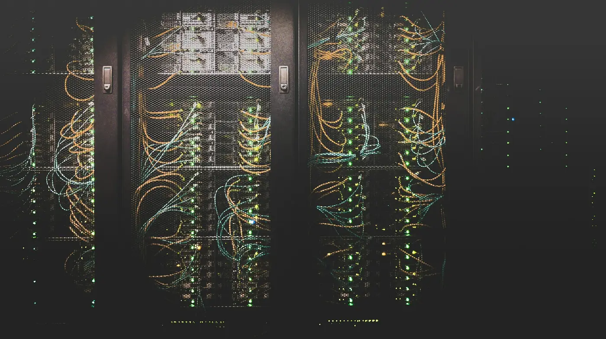

Network engineer intern, software and automation
Verizon
Two summers automating network work at Verizon in Richardson, TX.
- Internal tools. No public link.

By the numbers
- $70Ma year in revenue on the tool I built
- $480Ka year saved by leaving VMware
- $2M+more savings projected
- 200+devices given backups
- 300+automatic tests in the release pipeline
What I did
- Found 200+ live voice-network devices with no backups, and automated the fix.
- Built the Carrier Trunk Provisioning Tool alone. It is the record system and API behind a $70M-a-year revenue line.
- Built a release pipeline with 300+ automatic tests.
- Moved apps off VMware to Verizon’s internal cloud, saving $480K a year, with $2M+ more projected.
- Wrote a 25+ item requirements spec and handed the backup work to operations.
Notable work

Carrier Trunk Provisioning Tool
The record system and API behind a $70M-a-year revenue line. I built it alone.
See the project
Voice network device backups
200+ live voice-network devices had no backups. I automated the fix.
See the project
Moving apps off VMware
Moved apps off VMware to Verizon’s internal cloud, saving $480K a year.
See the project